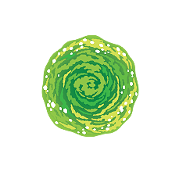

Saison 6
Plongez dans l'univers excentrique de la saison 6 de 'Rick et Morty' ! Notre fansite propose analyses approfondies, contenus exclusifs et une communauté passionnée pour explorer ensemble les secrets de la série.
Saison 6 Épisode 1
Rick et Morty sont de retour… toujours coincés dans l’espace, à la dérive au milieu des décombres de la Citadelle. Parviendront-ils à s'en sortir sans pisto-portail ?
Saison 6 Épisode 2
Lorsque des terroristes aliens prennent le contrôle de Blips and Chitz, Rick demande à Summer de faire comme dans le film "Piège de cristal"… qu'elle n'a jamais vu !
Saison 6 Épisode 3
Tandis que Beth pousse le concept d'amour de soi un peu trop loin le jour de Thanksgiving, Morty et Summer trouvent du réconfort dans un jeu vidéo réaliste.
Saison 6 Épisode 4
Lorsque les Smith apprennent que Rick a recours à une technologie qui lui permet de faire du sport pendant son sommeil, ils veulent absolument l'essayer.
Saison 6 Épisode 5
Lorsque le biscuit porte-bonheur de Jerry annonce l'impensable, ce dernier est bien décidé à faire toute la lumière sur cette prédiction choquante.
Saison 6 Épisode 6
Préoccupés par l'état actuel des choses, les anciens dirigeants de la Terre sont de retour avec des mesures radicales, mais Rick ne compte pas les laisser tout changer !
Saison 6 Épisode 7
Rick et Morty se retrouvent pris dans une boucle d'aventures confuses et méta-alimentées, menant à une confrontation avec un ennemi en manque de motivation.
Saison 6 Épisode 8

Rick en a plus qu'assez d'être attaqué par des supervilains plutôt farfelus. Ne comprenant pas pourquoi il est leur cible favorite, il demande conseil.
Saison 6 Épisode 9
Lorsque Morty accepte le cadeau d'un inconnu, une aventure chaotique s'ensuit. Si seulement il avait écouté les conseils de Rick…
Saison 6 Épisode 10
Noël avait pourtant bien commencé… Mais les choses se corsent lorsque Morty découvre une trahison après avoir reçu un cadeau provenant d'une galaxie lointaine.